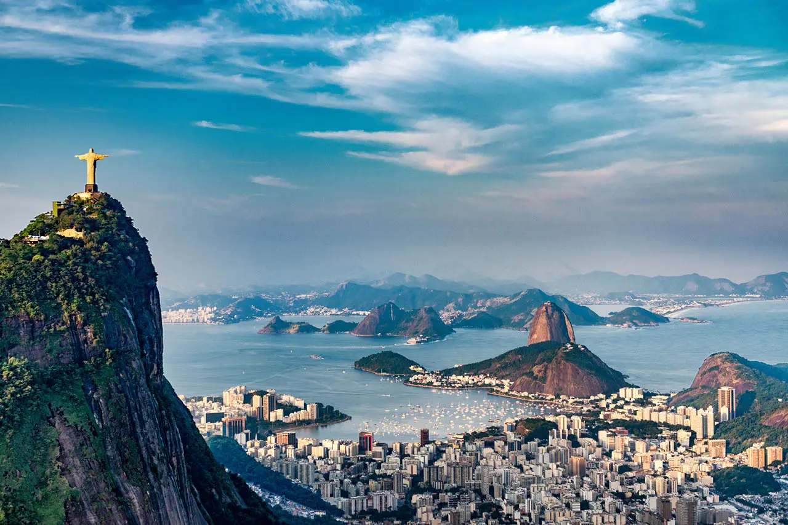
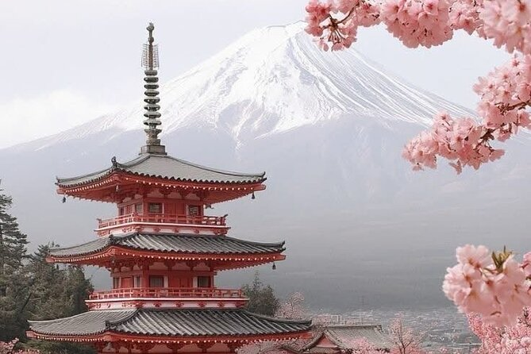
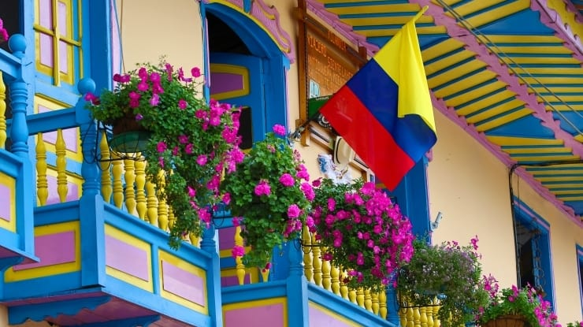
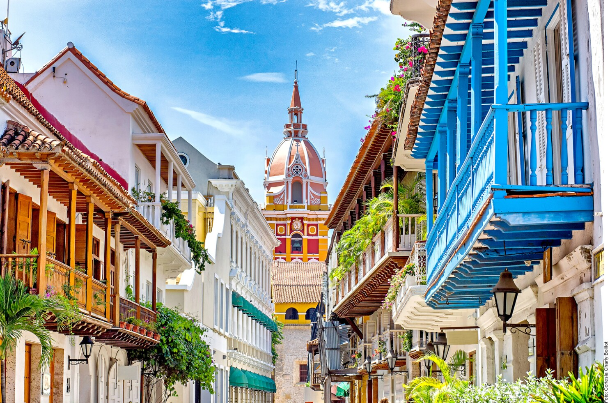
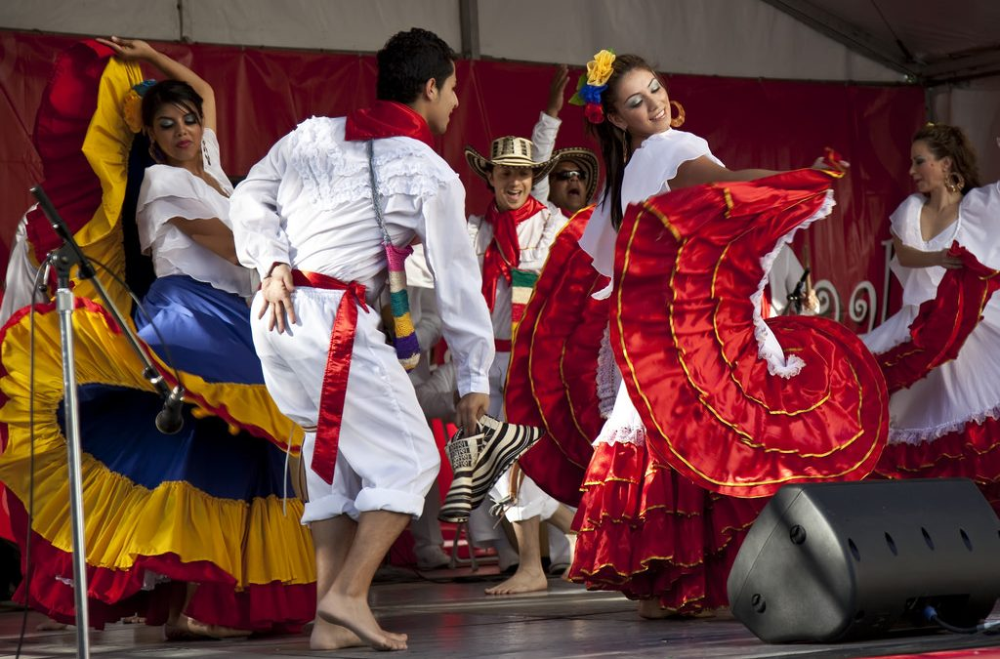
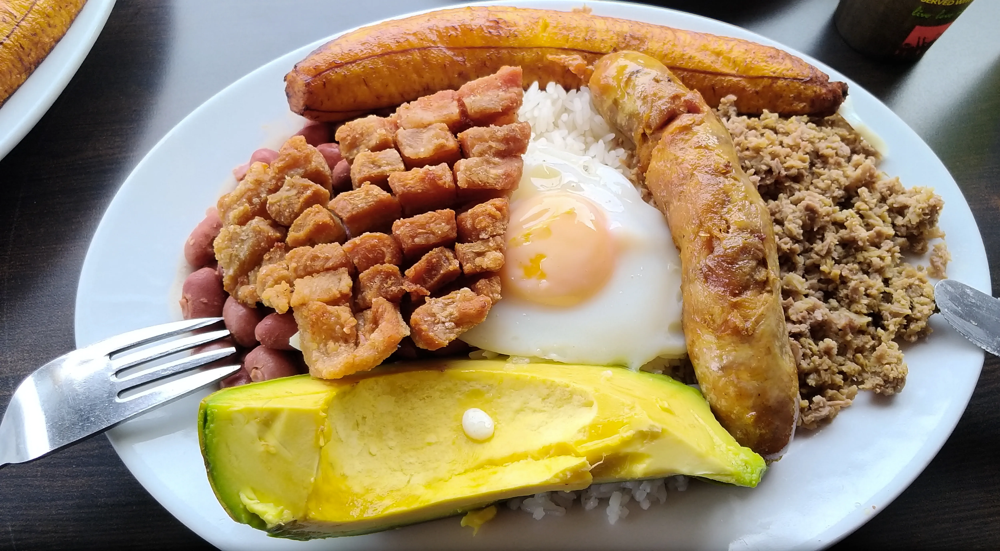

Brasil
Região: América do Sul
Pratos típicos: Feijoada, Coxinha, Pão de Açúcar

Japão
Região: Ásia
Pratos típicos: Sushi, Ramen, Tempura

Colômbia
Região: América do Sul
Pratos típicos: Arepa, Bandeja Paisa, Empanada
Região: América do Sul
Pratos típicos: Feijoada, Coxinha, Pão de Açúcar
Região: Ásia
Pratos típicos: Sushi, Ramen, Tempura
Região: América do Sul
Pratos típicos: Arepa, Bandeja Paisa, Empanada
Localizado na América do Sul, o Brasil é o maior país do continente e o quinto maior do mundo em extensão territorial. Tem mais de 200 milhões de habitantes e sua capital é Brasília. O país é conhecido pela grande diversidade cultural, pela riqueza natural, pelas praias, florestas, festas populares e pela mistura de influências indígenas, africanas e europeias. Sua economia é uma das maiores da América Latina, com destaque para a agropecuária, a indústria, o turismo e os serviços.

É um dos símbolos mais famosos do Brasil. Localizado no topo do morro do Corcovado, no Rio de Janeiro, o monumento tem vista panorâmica da cidade e é um dos pontos turísticos mais visitados do país. Além da importância turística, representa também a fé e a identidade cultural brasileira.

A feijoada é um dos pratos mais tradicionais da culinária brasileira. Feita com feijão-preto e diferentes carnes, costuma ser servida com arroz, couve, farofa e laranja. É um prato muito associado à cultura popular e aos encontros em família, especialmente aos fins de semana.
Localizado no leste da Ásia, o Japão é um arquipélago desenvolvido e montanhoso com cerca de 126 milhões de habitantes. Tóquio é a capital e maior cidade, compondo a área metropolitana mais populosa do mundo. É uma monarquia constitucional, potência industrial focada em tecnologia e robótica, conhecida pela alta expectativa de vida e rica cultura, mesclando tradições milenares com a modernidade.

O Monte Fuji é o pico mais alto e um dos símbolos mais icônicos do Japão. Localizado na ilha de Honshu, próximo a Tóquio, é um vulcão ativo, mas adormecido. É um local de grande beleza, atração turística para escaladas no verão e, historicamente, um lugar de adoração sagrada.

Takoyaki é um popular petisco japonês em formato de bolinhas, crocante por fora e macio por dentro, recheado com pedaços de polvo, gengibre e cebolinha. Originário de Osaka, é grelhado em chapas especiais e finalizado com molho takoyaki, maionese, aonori e katsuobushi.

A Colômbia é um país localizado no noroeste da América do Sul, conhecido por sua grande diversidade cultural, natural e gastronômica. Sua capital é Bogotá, um importante centro econômico, político e cultural do país.

O território colombiano possui paisagens muito variadas, que incluem praias no Mar do Caribe, montanhas da Cordilheira dos Andes, florestas tropicais e cidades cheias de história. Além disso, o país é mundialmente conhecido pela produção de café de alta qualidade, considerado um dos melhores do mundo.

A Colômbia pode ser visitada em qualquer época do ano, pois possui clima tropical com temperaturas relativamente estáveis. No entanto, algumas épocas podem ser mais vantajosas! Sendo as principais épocas para festas: Fevereiro (Carnaval de Barranquilla) e Agosto (Feira das Flores em Medellín).

A culinária colombiana é resultado da mistura de culturas indígenas, espanholas e africanas. Os pratos costumam usar ingredientes como milho, arroz, feijão, carnes, batata, banana-da-terra e frutas tropicais. Entre as comidas mais conhecidas estão: Bandeja Paisa, Arepas e Ajiaco.